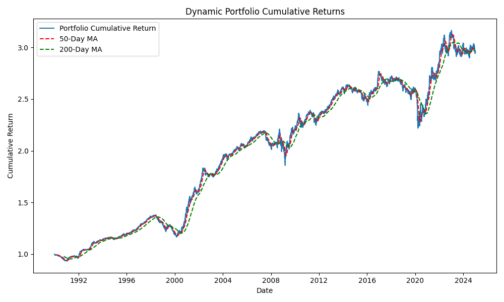
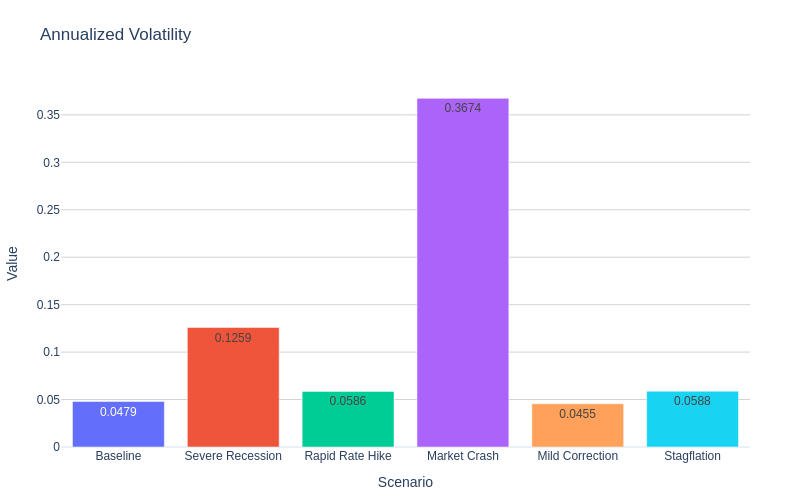
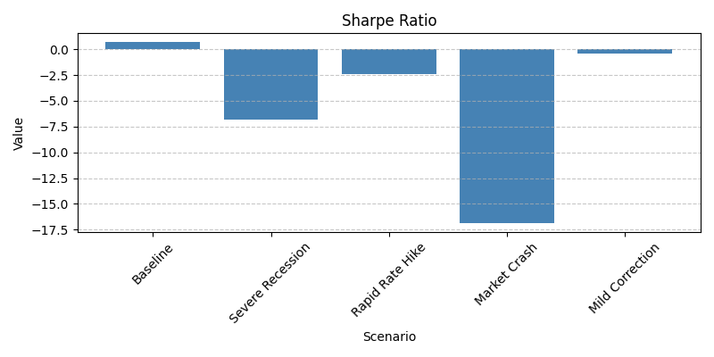
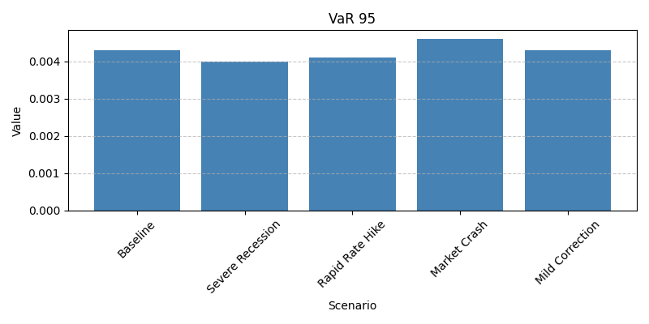
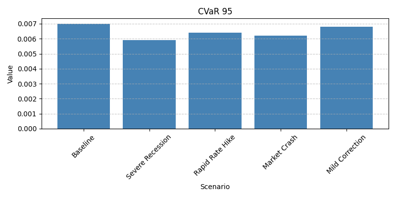
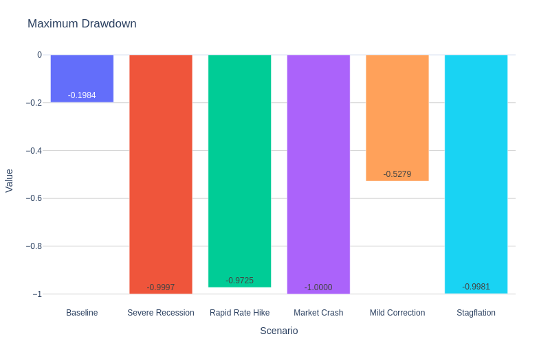
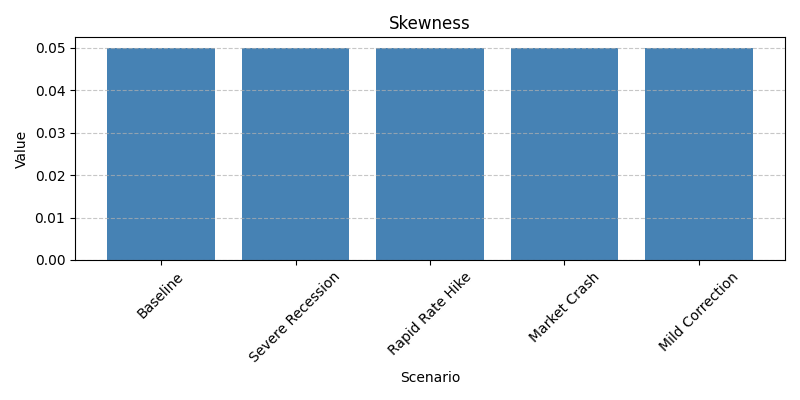
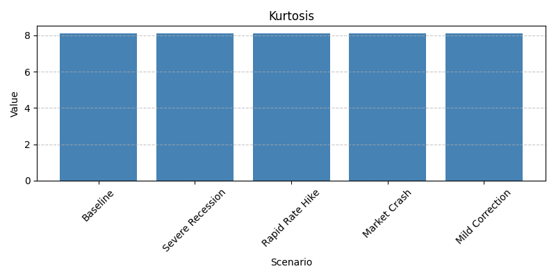

Dynamic Factor-Tilted Portfolio with Macro Stress Testing
Overview
This project dynamically constructs a factor-tilted portfolio using the Fama–French 5 Factor model. The historical factor data is sourced directly from Kenneth French’s website via web scraping. The portfolio adjusts its weights based on the current market regime (determined via SPY’s volatility and moving averages) and undergoes stress testing with various scenarios.
Features: - Market Regime Analysis: Uses SPY’s rolling volatility and moving averages. - Dynamic Factor Tilting: Adjusts portfolio weights based on the regime. - Risk Analysis: Calculates volatility, Sharpe ratio, VaR, CVaR, maximum drawdown, skewness, and kurtosis. - Stress Testing: Evaluates performance under hypothetical adverse scenarios. - Automated Documentation: Builds a static site with Sphinx. - GitHub Pages Deployment: Automatically updates the site on a weekly schedule.
Portfolio Performance
Risk Metrics
The following individual plots display the risk metrics computed for both the baseline portfolio and under different stress scenarios.
      How It Works
Data and Factor Computation: The project scrapes Kenneth French’s [data library](https://mba.tuck.dartmouth.edu/pages/faculty/ken.french/data_library.html) to locate and download the “F-F Research Data 5 Factors 2x3 Daily” dataset. Data is parsed and converted from percentages to decimals.
Market Regime Analysis: SPY’s historical data is used to compute: - A 30-day rolling annualized volatility. - 50-day and 200-day moving averages.
These metrics are then used to classify the market into regimes such as Expansion, Recession, Contraction, or Recovery.
Dynamic Portfolio Construction: Based on the regime, the portfolio tilts its exposure among five factors (MKT, SMB, HML, RMW, CMA).
Risk Analysis and Stress Testing: Risk metrics (annualized volatility, Sharpe ratio, VaR, CVaR, etc.) are computed for the portfolio under normal conditions and simulated stress scenarios.